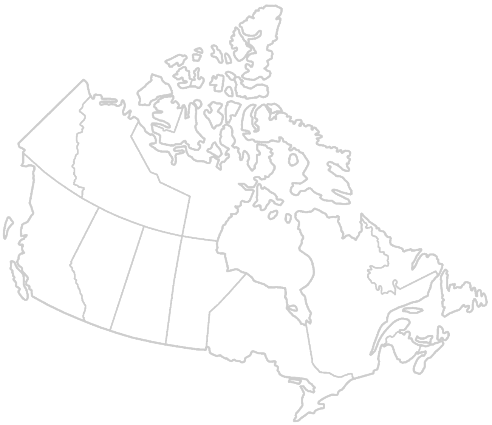
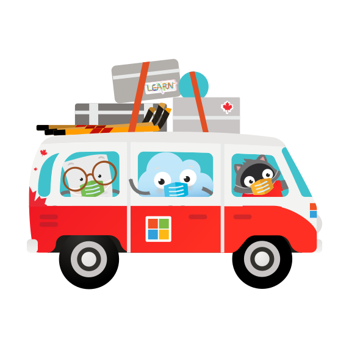

One day we were planning in-person meetups across Canada. The next, everything went digital.
How do you make a virtual meetup feel like an experience people want to show up for? and not just of another video call.

